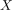
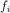
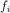

Initialtopologie als gröbste Topologie für die Stetigkeit der Abbildungen
1. Satz
Sei  eine Menge und  eine Familie von topologischer Räumen mit jeweils einer Abbildung
eine Familie von topologischer Räumen mit jeweils einer Abbildung  Dann ist die Initialtopologie die gröbste Topologie, so dass die Familie  jeweils stetig ist
Dann ist die Initialtopologie die gröbste Topologie, so dass die Familie  jeweils stetig ist
2. Beweis
Sei  eine Topologie auf , so dass mit
eine Topologie auf , so dass mit  jeweils stetig ist.
Dann lässt sich
jeweils stetig ist.
Dann lässt sich  auf folgende Weise Faktorisieren.
auf folgende Weise Faktorisieren.
Nach Universeller Eigenschaft gilt, dass  stetig ist, da stetig ist.
Somit folgt aus der Aussage über die Feinere Topologie und Identitätsabbildung, dass
stetig ist, da stetig ist.
Somit folgt aus der Aussage über die Feinere Topologie und Identitätsabbildung, dass  , d.h. ist gröber
, d.h. ist gröber